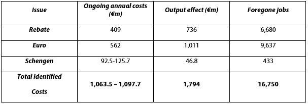

THE COMMITTEE ON CIVIL LIBERTIES, JUSTICE AND HOME AFFAIRS (LIBE)
Catalonia and Scotland’s struggle for autonomy continues to keep the questions of self-determination and autonomy relevant. What should the EU’s stance towards populations within its borders who seek independence be?
Chairperson: Dan Brown – United Kingdom
Explanation and relevancy of the Topic:
There are a number of regions in Europe whose population wish to seek independence. In Scotland, the symbolic, economic and geopolitical vision of the pro-independence camp is grounds enough to support a split from the union, whereas in Catalonia, its prosperous regional economy and unique identity encourage independence.
Article 50 of the Treaty on European Union (TEU), as amended by the Lisbon Treaty, sets out a procedure for a voluntary withdrawal from the EU according to a State’s “own constitutional requirements. This means that it is legal for every Member State, providing that a referendum is held and the people of the region get a say, for a separation to occur.
Although Scotland and Catalonia are the most advanced examples, they are not alone. Populations in Flanders seek independence from Belgium whilst those in Corsica seek autonomy from France. There are a variety of arguments for and against independence but this topic is not an assessment of whether or not individual campaigns are justified but rather, what the EU’s position should be if independence follows a referendum.
If, for instance, Scotland became independent, would it automatically remain a Member State of the EU – or would it have to go through the whole accession process for new Member States, either alone or alongside the rest of the UK? This is a major question in the independence debate, and one to which there are no clear answers. There is no precedent for a devolved part of a Member State becoming independent and having to determine its membership of the EU as a separate entity, and the question has given rise to widely different views.
There are at least three different possibilities under international law for a newly-independent state. The first is that there is a process of both continuation and secession. For example, in Scotland’s case, the UK would retain its treaty obligations and membership of international organisations but Scotland, as the breakaway region, would not. Another possibility is dual separation. That would mean both entities, be it the UK and Scotland or Catalonia and Spain, would retain and continue with its previous arrangements. Alternatively and thirdly, a complete dissolution would occur. Both Scotland and the UK, for example, would not retain any of their previous arrangements with the EU.
Whatever the position under general international law, a decision on Scotland and Catalonia’s status within the EU is likely to be a political one.
On the other hand, Member States with their own domestic concerns about separatist movements might argue that Scotland should lose its membership on independence. For instance, why would Spain agree to separation in the UK if they knew that by doing so they were setting a precedent that ultimately would work against them if Catalonia voted to be independent? This was referred to when Spanish Prime Minister, Mariano Rajoy, stated that his government believed an independent Scotland could only apply to join the EU from outside the organisation as a new state and there are long-held suspicions that the Madrid government will resist the Scottish government's plans because of its rejection of Catalonian independence.
As such, a key question is how would the EU respond in light of this political pressure? Would it make exception to certain political states or would it risk further destabilisation of the EU by not accepting breakaway states?
Links:
A good overview of how the EU would react should Scotland vote for independence: http://www.bbc.co.uk/news/uk-scotland-scotland-politics-27670533
The impact of independence to the EU: http://www.bbc.co.uk/news/uk-scotland-scotland-politics-27696769
An excellent and detailed introduction explaining the Referendum process as well as how potential negotiations could work: http://www.ucl.ac.uk/spp/publications/unit-publications/51.pdf
How MEPS view the impact of independence and how potentially the Parliament would respond: http://www.scotsman.com/news/politics/top-stories/scottish-independence-eu-would-want-scotland-1-3270786
Key Terms:
Key Questions:
· What are the options open to a breakaway region after successful separation?
· What are the political and economic consequences for a region that votes to leave the EU both for the EU as a whole, and the Member State?
· What political options are available to a region that votes to be independent yet fails in its attempts to be accepted into the EU?
· Should regions that vote to be independent automatically become part of the EU or should they go through the accession process?
Key Facts and Figures:
The EU Treaties feature no provision on the membership of an EU territory after secession
If Scotland were to be independent and accepted it would have vast consequences upon the number of seats in Parliament. At the moment the UK (population 60 million) has 29 votes in the Council and 73 seats in the European Parliament. Both Denmark (5 million) and Finland (5 million) have proportionately much larger representation: 7 votes and 13 seats each. Scotland’s population is also about 5 million. This is just one of the significant facts to consider as negotiations that would follow independence would need a clear stance from the EU that would satisfy all Members.
Recent polling revealed only 4% of Scots want an independent Scotland to join the Euro.
Estimated impacts of select EU-related costs for an independent Scotland:
Fig 1
Key conflicts :
The very notion of separation brings conflict. As is clear in both the Scottish and Catalonian cases, there is friction between those who wish to remain unified and those that wish to separate. Few topics evoke much emotion and passion from its supporters. Yet, whilst it may be a simple ‘yes’ or ‘no’ for those engaging in referendums in the countries themselves, the case is far from clear for the rest of the EU.
Each Member State will inevitably ask themselves, ‘what does this separation mean for me?’ As such, there are a number of potential conflicts.
To begin with, article 49 of the Treaty on EU provides that the accession of any new Member State must be ratified by all others. This potentially provides the United Kingdom and Spain with veto power on the accession of the new states, which could be used not only against their former region, but also against each other.
The key conflict is whatever the position under general international law, it is by no means clear whether or not Scotland, Catalonia or any other region would retain membership of the EU automatically if it gained independence. Nothing in the EU Treaties sets out what would happen in the event of part of a Member State becoming independent. Articles 4.2 and 5.3 of the consolidated EU Treaty incorporating the Lisbon Treaty specifically mention local and regional government for the first time, but do not concern succession or EU membership.
A number of complex issues would need to be resolved through negotiations with other Member States. These would include a new relationship with the Common Agricultural and Common Fisheries Policies, revised trade rules with Member States and with third parties, and changes to the arrangements for the free movement of workers throughout the EU and EEA areas, to name but a few.
Links:
The conflict between the ‘Yes’ and ‘No’ campaigners in Scotland and their view on the EU: http://www.newstatesman.com/blogs/the-staggers/2012/01/euro-scotland-join-osborne
A could overview of the conflict in Catalonia: http://www.bbc.co.uk/news/world-europe-20644877
The European Commission view on independence: http://www.euractiv.com/video/commission-rates-judiciary-independence-eu-member-states-48399
Stakeholders:
Existing Measures:
There is no clear case study by which to judge or assess how the Members States, the Commission or the EU as a whole would react.
Those who wish to demonstrate that a newly independent Scotland and Catalonia would not automatically find itself outside the EU have sometimes cited the example of Greenland, the only country to have left the EC. For them, the fact that Greenland’s exit from the EC required protracted negotiations implies that Scotland and others could not be automatically ejected.
Greenland secured autonomy from Denmark in 1979 and voted to withdraw from the EU in 1982. But it was not until February 1985, after difficult and protracted negotiations, that Greenland formally left the EU and re-associated itself with the EU through the Overseas Countries and Territories (OCT) formula.
Furthermore, the EU has in the past enlarged without accession. This happened when the former East Germany became part of the European Community. There was no formal application process but a process of absorption. Several agreements were quickly ratified by the Member States to allow for the increased membership and transitional provisions for the East German lands. Institutional and other necessary provisions relating to the enlargement were later adopted and incorporated as Treaty amendments. However, in the case of East Germany there was no increase in the number of Member States.
As such, although both Greenland and Germany can act as an indicator, there is no direct precedent to which the EU would follow and as such this committee has the opportunity and focus to detail what it would like to see happen should a region vote to be separate.
It is essential to understand that the primary focus of this committee is not to judge whether it is correct that Scotland, Catalonia or any other region in the EU is justified in seeking independence, but rather how should the EU respond both legally and politically.
Additional Links
A comprehensive overview of what each Member State’s view is on independence: http://www.bbc.co.uk/news/uk-scotland-scotland-politics-21601242
A useful article on the similarities between the Scottish and Catalan campaign and the EU response: http://www.scotsman.com/news/politics/top-stories/catalan-eu-claim-may-impact-on-scots-independence-1-3096498
The impact upon the European Parliament of independence: http://www.euractiv.com/sections/eu-elections-2014/catalonian-independence-creates-eu-election-issue-301921